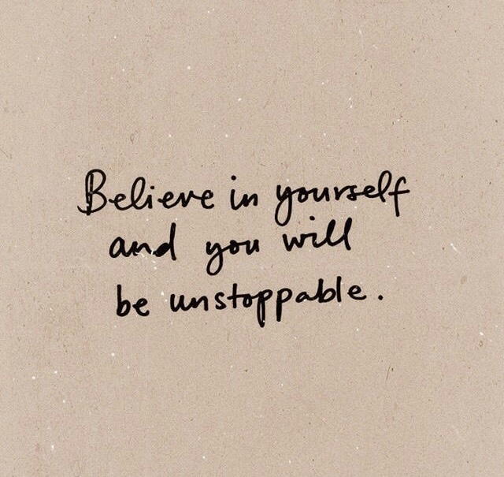
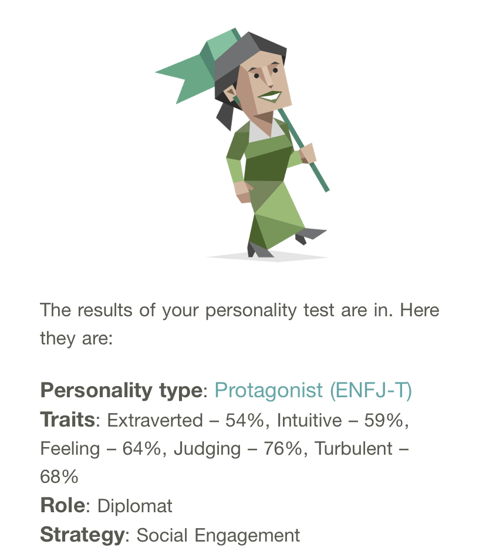

About Me
My Interest
Till at the age of 16, I was just following the pathway which was given by my
parents.
During the gap 2 years, I can obviously see that the importance of technology is
vital
mostly due to the pandemic. My interest in technology grows from that time. That’s
why,
I applied to information technology at SP to start the first step for my long
journey.

My Value
I believe that there is nothing I cannot solve. “If there is a will, there is a
way”.
May be that is the mindset I created because I don’t wanna give up so easily and
don’t
wanna feel down whenever I have problems. Besides, I strongly think that if you
dedicate
and try something hard, you will definitely get it.

My Personality
My personality type is Protagonist(ENFJ-T). I am extroverted with the people who are
close to me but I got a lot of comments before like I am quite difficult to
communicate.
I guess my social communication skill has improved a lot after I has started working
so
many jobs from last two years.
What I do for motivating myself
As I am new to IT, there are so many things that I have to catch up. Sometimes, I
felt so stressed out because other colleagues can do well in most of the modules and
I feel like I am the only one who can't do well. So, there are something I do for
getting back my motivation like listening to music and watching movie. Here are the
songs which
I listen whenever I am depressed.